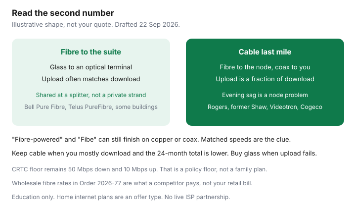

Internet · Canada
Fibre vs Cable Internet in Canada: Uploads, Congestion, and What the Labels Mean
“Fibre” on a Canadian internet ad often means the glass stops at a neighbourhood cabinet or a cable node. The last metres into the suite are still copper or coax. That is why two neighbours can both claim fibre, one of them can send a video call without freezing, and the other is paying for a download headline. This is a household decoder: fibre to the home versus DOCSIS cable, what evening congestion usually is, which marketing words to ignore, and when cable is still the rational buy. It is not a national ranking.
Disclosure: Home internet plans on fibre and on cable are offer types. Saving Optimizer does not claim a live ISP partnership. Education only. Confirm the technology on a quote for your civic address.
Key takeaways
- Fibre to the premises puts glass in the home. Cable (DOCSIS on hybrid fibre-coax) puts glass in the neighbourhood and coax in the home. Both get called fibre in ads.
- Upload is the tell. Bell Pure Fibre Ontario cards on 21 Sep 2026 matched download and upload on several tiers. A cable gigabit often uploads a fraction of that. Read the second number.
- Residential fibre is still shared at a splitter. The CRTC’s wholesale cost model uses a 1:32 ratio on shared feeder. It is not a private strand, and it is still a different evening pattern from a coax node.
- Cable wins when you mostly download, the 24-month after-promo total is lower, and the upload on the quote clears your worksheet. Fibre wins when two calls plus a backup collide.
- Verify at the address: write down technology, download, and upload. A logo is not a lab result.
FTTH versus DOCSIS cable in plain language
Fibre to the home, also called fibre to the premises or to the suite, means the optical fibre reaches an optical terminal in your unit. The internet light is converted there. Bell markets the glass version as Pure Fibre. Telus markets it as PureFibre. Some building networks (Beanfield in parts of Toronto, Novus in parts of Metro Vancouver) own this kind of drop inside specific towers. You can still have a fibre jack and a bad Wi-Fi router. The wire and the radio are different problems.
DOCSIS cable is the system Rogers, the former Shaw plant, Videotron, Cogeco, and Eastlink use on most existing streets. Fibre runs to a node. Coaxial cable runs from the node into the suite. The modem speaks DOCSIS, currently 3.1 on modern tiers, with higher-split upgrades appearing on some nodes so uploads are less miserable than they were in 2018. The brand name in 2026 is often Xfinity or Ignite. The medium is still coax unless the quote says the drop itself is fibre.
Two in-between technologies cause the arguments:
- Fibre to the node, then copper. Legacy Bell Fibe and some Telus internet finish on a phone pair. The company is not lying that fibre exists nearby. You do not have fibre.
- Fibre to the basement or a building switch, then ethernet in the suite. Common in bulk condo deals. You may have excellent symmetrical speeds and no ability to swap the modem. See the apartment and condo guide before you assume you can “just order Bell.”
The CRTC’s universal service objective is still 50 Mbps down and 10 Mbps up. That is a policy floor for basic participation, not a recommendation that a household buy 50/10, and not a definition of fibre. A cable plan can clear 50/10 easily and still feel awful on two video calls. A fibre plan can miss the address entirely.
Uploads, latency, and evening congestion patterns
Download is the number on the bus ad. Upload is your face on a call, a cloud backup, a kid’s school file, and a camera that never stops sending. Plans that look identical at “500” or “gigabit” diverge here.
Dated illustrations, not your quote:
- Bell’s Ontario Pure Fibre cards on 21 Sep 2026 showed matched uploads on the 150 and 500 tiers, and 940 Mbps up on the 1.5 Gbps tier. That pattern is what fibre-to-the-home is for. Legacy copper Fibe often does not do this. The detail lives in Rogers versus Bell.
- Oxio’s comparison rows dated 11 Sep 2026, which ride cable plant, showed Ontario 100/100, Ontario 500/200, Ontario 1000/200, and a western 1500/200. Fast down, capped up. That is the cable shape even when one tier happens to look symmetrical.
Latency is the delay, not the size. Fibre to the suite is usually steadier for calls and games because the last mile is not a shared coax amplifier chain. Do not treat a blog’s millisecond claim as a promise. If gaming is the reason you are shopping, test ethernet at the hour you play, after you have the service, and keep the receipt inside any trial window.
Evening congestion is real on cable when a node is busy: many suites share the neighbourhood coax segment, and speeds sag around 8 p.m. even though a noon test looked perfect. Fibre is not immune. The CRTC’s final wholesale fibre order (Telecom Order 2026-77, 24 April 2026) describes shared feeder plant with a 1:32 split in the cost model. Up to about 32 homes can share fibre capacity toward the office. That is a lot more headroom than a crowded cable node, and the upload is provisioned on purpose, but it is not a private fibre with your name on the glass. If ethernet is slow at 8 p.m. on a fibre tier, call it congestion or a fault. If ethernet is fast and Wi-Fi is slow, buy placement or mesh, not a bigger adjective. The worksheet separates those cases.

Marketing labels that confuse shoppers
| What the ad says | What it often is | What to verify |
|---|---|---|
| Pure Fibre, PureFibre, FTTH, fibre to the home | Glass to the suite, when the address qualifies | Upload close to download on that tier. An optical terminal on the wall. |
| Fibe, fibre internet, fibre-powered, fibre network | Brand language. Can be FTTH, copper from a node, or coax from a node | The quote’s technology line and the upload. Ignore the adjective until then. |
| Gigabit, 1.5 Gig, 2 Gig | A download headline | Upload, and whether one ethernet port can even pass it. Several ISPs warn that a single device will not show multi-gigabit. |
| Up to | A maximum, not a floor | The plan’s typical or “up to” pair, then an ethernet test after install. |
| Unlimited | No overage on that service, unless a fair-use policy says otherwise | The fair-use paragraph. The Internet Code rule is explained in the Code guide. |
Rogers can sell fibre to the home on some new streets and cable on the next block under the same Ignite or Xfinity name. Bell can sell Pure Fibre on one side of a Toronto street and copper Fibe on the other. Telus PureFibre is widespread in Metro Vancouver and still missing in some buildings. The label on the truck is the company. The label on the quote is the technology.
When cable is still the rational buy
Cable is not a consolation prize. Buy it when the household math says so.
- Your worksheet is mostly download: a couple of streams, browsing, one occasional call. You do not upload video for work.
- The cable upload on the quote still clears the worksheet. For two overlapping high-definition calls, that is on the order of 20 Mbps up before a backup, as framed in the speed guide. A 30 or 50 Mbps cable upload can be enough. A 10 Mbps upload usually is not, once a second person joins.
- The 24-month total after the promo, plus equipment, is meaningfully cheaper than fibre at that address. A fibre tier you will not light is not a moral victory.
- The “fibre” alternative is actually copper from a node, with a worse upload than the cable tier. Take the cable.
- The building only has coax this year. Waiting on a multi-year access dispute, described in the apartment guide, is a different project from needing internet this month.
Cable is the wrong buy when the upload column fails and a real fibre-to-the-suite tier is offered at a similar 24-month cost. It is also the wrong buy when you are paying gigabit-down prices for 30 Mbps up because the ad used the word fibre. Re-shop with the seven-day plan when the credit ends either way. The medium does not freeze the price.
How to verify the technology at your address
- Use the civic address, including unit number. Postal-code tools lie in buildings with more than one plant.
- Open the incumbent and one independent. Write technology, download, upload, promo months, price after the promo, and equipment.
- If upload is in the same neighbourhood as download and the page says fibre to the home or the suite, treat it as FTTH until a tech tells you otherwise.
- If download is several times the upload, treat it as cable or copper until the quote names the drop. Do this even if the headline says fibre.
- After install, test ethernet to the modem at noon and again near 8 p.m. Wi-Fi does not count as a technology test.
Wholesale fibre does not change the method. Telecom Regulatory Policy 2024-180 required the large telephone companies to offer aggregated wholesale fibre-to-the-premises, with a head start on newer builds. Telecom Order 2026-77 (24 April 2026) set final rates. In Alberta and British Columbia the Telus access rate is $77.21 a month for 15 to 1500 Mbps, before capacity charges the competitor also pays. In Ontario and Québec, Bell’s access rate is $68.26 up to 1500 Mbps, again before capacity. Those are wholesale inputs, not your bill. They explain why a tiny independent’s “fibre” tile can cost about as much as the incumbent, and why a brand-new build may not appear on a reseller’s checker until the head start ends (the order discusses availability of post-policy builds out to August 2029). If the independent’s tool says no, believe the tool for that day and price the incumbent.
A side-by-side decision table
| Question | Fibre to the suite | Cable (DOCSIS / coax last mile) |
|---|---|---|
| Last mile | Glass to an optical terminal | Coax from a neighbourhood node |
| Upload | Often matched or close to the download on the tier | Often a fraction of the download. Read the tier. Some nodes are better than they were. |
| Evening | Shared at a splitter, usually with more headroom | Shared node. Sag is common when the node is full. |
| Wi-Fi | Still your problem if the gateway is in a closet | Still your problem. A faster tier will not fix a concrete-wall radio. |
| Choose it when | Upload is the complaint, or the 24-month price is close | You mostly download and the after-promo total is clearly lower |
| Walk away when | The “fibre” quote is copper, or the price is for speed you cannot use | Upload fails the worksheet and real FTTH is offered beside it |
Then do the city pass if you are in those markets. Toronto is address-first. Vancouver is PureFibre versus Rogers cable, including former Shaw plant. The technology test above is the same in both.
Sources & date stamps
- CRTC universal service objective, 50 Mbps down and 10 Mbps up, as cited from crtc.gc.ca internet pages in our speed guide. Reconfirmed as the policy floor for this draft on 22 Sep 2026.
- Telecom Order CRTC 2026-77 (Gatineau, 24 April 2026) — final aggregated wholesale FTTP rates. Bell Canada (Ontario and Québec) access $68.26 (3–1500 Mbps) and $77.20 (1501–8000 Mbps). TELUS (Alberta and British Columbia) access $77.21 (15–1500 Mbps) and $81.81 (1501–5000 Mbps). Shared feeder discussed at a 1:32 ratio. Newer FTTP builds after Telecom Regulatory Policy 2024-180 have a head start the order places out to August 2029. These are wholesale inputs, not retail prices.
- Bell Ontario Pure Fibre upload pattern and Rogers plan shapes — our Rogers versus Bell guide, cards fetched 21 Sep 2026.
- Oxio cable speed shape — Topicks.ca rows dated 11 Sep 2026, as tabled in our Oxio guide. Address tools override the table.
- Oxio help centre description of coax as fibre-to-the-node — summarized in our Oxio guide from the page current as of 21 Sep 2026.
Frequently asked questions
Is cable internet actually fibre?
The neighbourhood feed is often fibre. The last stretch into a cable home is coaxial, using DOCSIS. Ads that say fibre-powered or fibre network are usually describing that neighbourhood glass. Fibre to the home means the glass reaches your unit.
Why does my gigabit plan upload slowly?
On cable, the upload is a separate, smaller number. A 1000 Mbps download with 30 to 200 Mbps up is a normal cable shape, not a broken test, as long as ethernet shows that upload. On fibre to the suite, a tiny upload means you probably are not on the glass product the ad implied. Read the quote.
Does fibre slow down in the evening?
It can. Homes share feeder capacity. The CRTC’s wholesale model uses a 1:32 split. A crowded cable node still sags more often, because many suites share a smaller coax segment. Test ethernet at 8 p.m. before you blame Wi-Fi or buy a higher tier.
When should I keep cable?
When your use is mostly download, the upload on the quote covers your calls, and the 24-month price after the promo beats fibre at that address. Also keep cable if the other offer is copper “Fibe” with a worse upload.
How do I know which one the address has?
Qualify the unit, not the postal code. Write the upload next to the download. Matched or near-matched speeds plus a fibre-to-the-home line means glass. A download several times the upload means cable or copper until the installer proves otherwise.